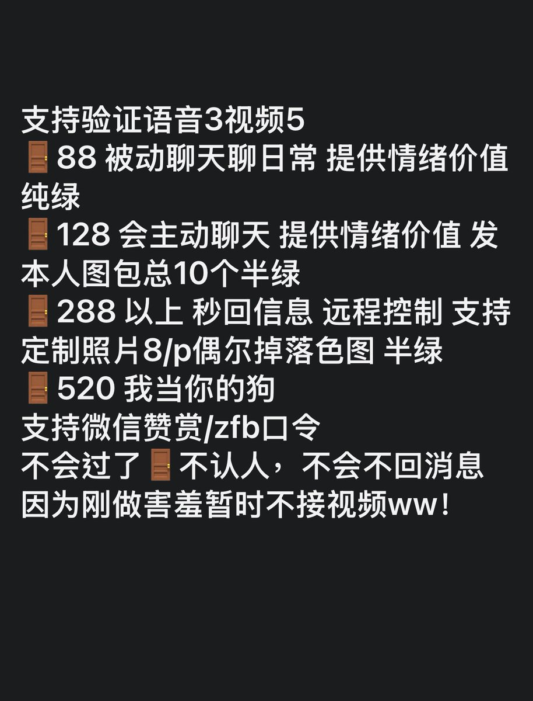

在变成幽灵的第100个晚上
@kikisuki111
RT @Uid2e0: 这里小浔，08年休学在家。双相无法出去工作➕家里欠债所以下海了，很需要钱所以拜托入我门吧。288/520仅支持口令红包。欢迎互fo互转。大号不知道为什么被f了😭 #门槛妹 #爸爸活 #反差

浔
@Uid2e0
这里小浔，08年休学在家。双相无法出去工作➕家里欠债所以下海了，很需要钱所以拜托入我门吧。288/520仅支持口令红包。欢迎互fo互转。大号不知道为什么被f了😭 #门槛妹 #爸爸活 #反差 https://t.co/FMTa9X2EYs